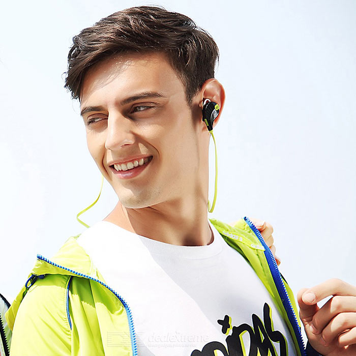

Ideaal voor tijdens het sporten
Door de draadloze bluetooth verbinding met je telefoon, heb je
met deze koptelefoon geen hinder aan onnodige draadjes.
Ideaal voor tijdens het sporten!
Zelfs bij intesieve bewegiging door het design met extra grip.
Genieten van muziek 360° graden om je heen!
De koptelefoon is te bestellen in een aantal kleuren, namelijk groen/zwart, rood/zwart, blauw/zwart, zwart of wit.
Lange batterijduur
Een batterijduur van wel 8 uur lang! Met oplaadbare batterij voor het maximale gebruik.
- verbinding tot wel 10 meter vanaf je verbonden apparaat.
- met ingebouwde microfoon, om ook te kunnen bellen.
- connectie met 2 telefoons tegelijk
- geluiodsdempend om optimaal te kunnen genieten van de muziek
- 4 uur nonstop muziek luisteren
- USB gebruik

€ 18,-
Voor eventuele vragen zijn we bereikbaar via
the.official.wireless.inc@gmail.com.